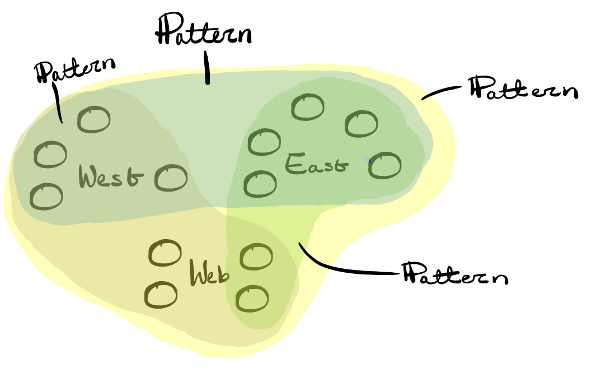
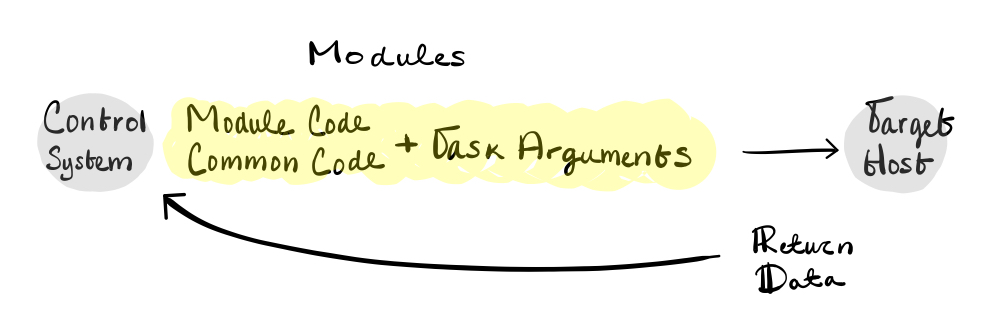

Inventory ←
hosts.ini- A set of potential targets hosts to execute tasks on
- Ansible must have a target to do anything
- Inventories are not specifically tied to a set of Ansible instructions.
- Multiple inventories can exist and be used at execution time.
An inventory is a collection of hosts; optionally sorted into groups potentially with variable data.
A simple inventory is just an uncategorized list of host names or IP addresses.
As the inventory grows, it is important to categorize them into groups, and subgroups for proper organization.
Hosts are grouped for many reasons:
- Purpose
- Locality
- Operating system
Patterns can be expressed as a single item or collections that are inclusive, exclusive or unioned.
- Hosts or groups are used in patterns as an entity to target or as an entity to skip from within a target.
- Patterns support wild cards and even regular expressions.

As
Ansible supports multiple inventories, one can create automation using the same group names but different values within each inventory.
One can reference the group names in the patterns, allowing one to quickly switch from testing in dev to deploying in production, simply by changing the inventory option.
| Simple |
Groups |
Subgroups |
| server1.domain |
[web] |
[east:children] |
| server2.domain |
server1.domain |
web |
| server3.domain |
server2.domain |
|
|
|
[web:children] |
|
[db] |
db |
|
server3.domain |
|
Inventory variablesThese variables contain data related to a host comprised of key in value pairs,
These variables are used in:
Variables can be expressed directly in the inventory file alongside the host so that they are specific to that particular inventory.
Task Arguments:
Templates Configuration:
[database]
conn = {{ db }}
Ansible Behavior:
Inventory File
Expressed directly in the inventory file alongside the host so that they are specific to that particular inventory
inventory/hosts:
[web]
myhost foo=a_value
Group Files ← Applies to multiple inventories
Expressed in separate files within inventory subdirectories allowing for the same variable data to apply to multiple inventories.
inventory/group_vars/web.yaml:
foo: different_value
inventory/group_vars/all.yaml:
foo: default_value
Variable Precedence Scope
Host < Group < Groups of Groups < All Groups
Inventory SourcesInventories and the variables associated with them, can come from static or dynamic sources or even a blend of both.
Static
Cloud
- OpenStack
- Amazon AWS
- Google Compute
- Microsoft Azure
- DigitalOcean
- Containers/VMs
- Docker
- VMware
- VirtualBox
- Vagrant
- ssh_config
Many other options are provided in Ansible's source repository. Ansible also provides documentation on how to create your own dynamic inventory scripts which is very useful if your fleet is already accounted for in an existing system.
Tasks – The actions Ansible takes on target hosts
- Descriptive of desired state
- Expressed in YAML
- Just enough abstraction
Task Data – Data can be considered arguments to an executable script
This could be the database to create or folder to create.
Task Controls
Controls relate to the task itself and can influence things such as looping over the task multiple times with different data provided, whether or not to use privilege escalation on the target host, or whether the task should be executed at all.
- Looping – This is performed with different data provided
- Repeat task over a list of items
- Priviledge escalation – Accessing directories that require elevated permission
- Sudo to root or others
- Conditional execution – Does a file already exist?
- Runtime decisions
Ansible is not just a task repeater. It provides the ability to analyze and determine if a task should be performed.
Task Return DataDetermines wether the task should be attempted or not.
| skipped |
FALSE |
| changed |
TRUE |
| path |
/derp |
| mode |
755 |
Modules – The code that tasks use to perform work.
Small bits of code that Ansible combines with common execution code and task argument input to be transported to the target host for execution.

Hundreds of modules are bundled with Ansible across a variety of categories; however, customer modules can be created.
Playbooks – Collection of Tasks
Used to parse and execute the playbook with a provided inventory.
- YAML files
- Collection of one or more plays
- Plays ← One or more tasks linked to the hosts that are to be executed on
- Link tasks with target hosts
Create inventory
vim hosts
[groupA]
host1
host2
host3
[groupB]
host4
host5
host6
[all:vars]
ansible_connection=local
A YAML is a text file that any text editor will understand. have to include three dashes to indicate a YAML file.
demoplays.yaml
---
- name: "Do a demo"
hosts: groupA
tasks:
- name: demo tasks 1
debug:
msg: "this is task 1"
- name: demo tasks 2
fail:
msg: "this is task 2"
when: inventory_hostname == "host2"
- name: "Do another demo"
hosts: groupB
serial: 1
tasks:
- name: demo tasks 3
debug:
msg: "this is task 3"
- name: demo tasks 4
debug:
msg: "this is task 4"
ansible-playbook -i hosts demoplays.yaml
Task Conditionals
- Boolean statements
- Evaluated for each target host
- Executes task for host if true
- Skips task for host if false
Play Controls
Additional logic can be added to plays to control behavior, such as an alternate execution strategy, an acceptable amount of failure. where to use priviledge escalation, or more.
StrategySerial execution mode with a batch size of 1 – Each hosts is individually taken through all the tasks before operating on the next host.
ansible-playbook -i hosts.ini prometheus.yml -u userID --ask-pass --ask-become-pass --ask-vault-pass